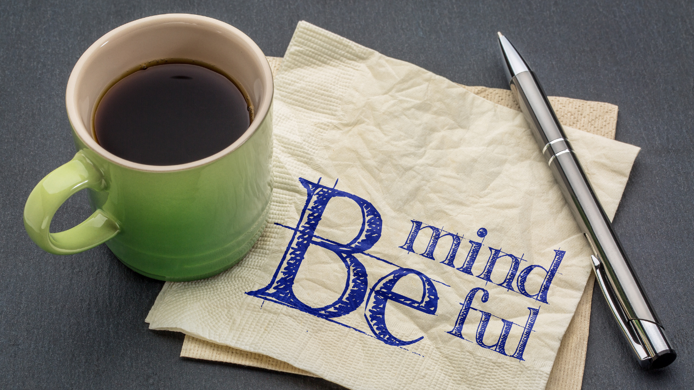
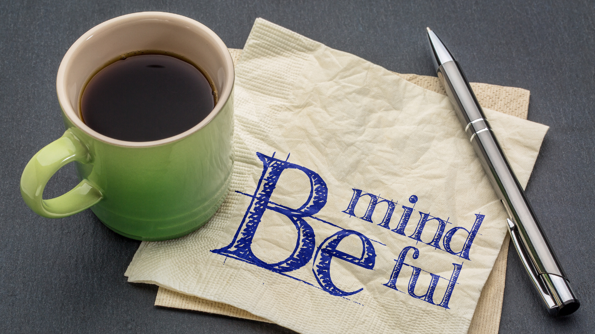

Aloha, and Welcome.
어서오세요
At Personal Peace Cafe, we believe in the power of Rest. Not just resting physically, but mentally, emotionally, and spiritually. We also allow space for resting socially, creatively, and sensory rest. You can find out more about the seven kinds of rest here. We hope that, by being in this space, you feel encouraged and allowed to rest, to enjoy your tea and a nice book, and meditation if you wish.


Upcoming Events
Peaceful Tea Time
Join us for a peaceful tea time, outdoors in our cafe garden. Tea and coffee are provided.

Meditation Days
Join us for Vipassana or Insight meditation on Mondays and Wednesdays, and Zazen meditation on Thursdays and Saturdays.
Korean Tea Ceremony
Join us for our traditional Korean tea ceremony or 다례 (darye).
Experience peace and harmony, while learning about Korean culture.

Learn about Herbal Teas
In this workshop, learn about different kinds of herbal teas and their medicinal uses.